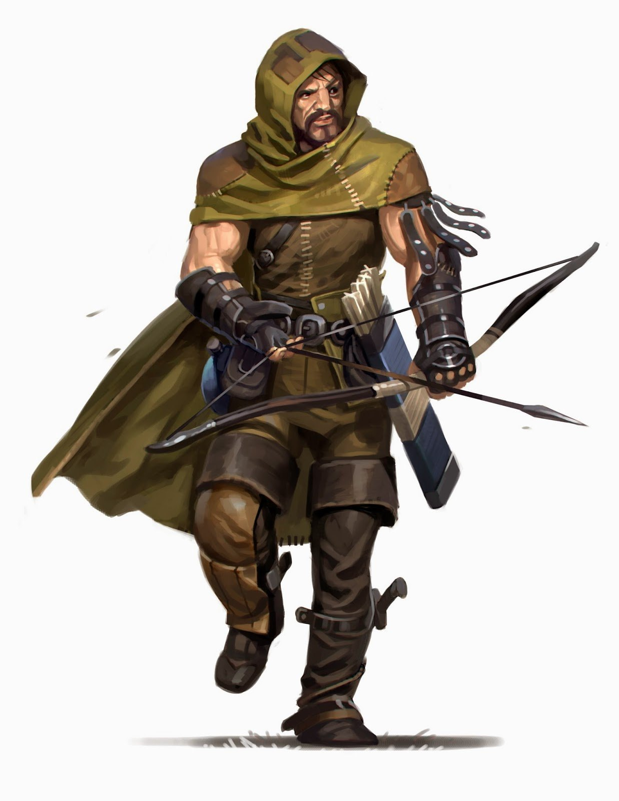

Для тех, кто живет охотой, на свете есть только хищник и добыча. Следопыты - будь то разведчики, охотники за зверями или за головами - имеют много общего: выдающееся умение пользоваться оружием, навыки выслеживания даже самой хитрой добычи, а также способность, выследив, одолеть ее. Терпеливые, знающие и искусные, следопыты умеют охотиться на гуманоидов, зверей и чудовищ, пользуясь особенностями местности и специальными приемами. Одни могут заниматься выслеживанием тварей-людоедов и защитой поселений, другие же преследуют гораздо более хитрую дичь - людей.
Следопыты - подвижные бойцы, способные атаковать с дистанции или в ближнем бою, быстро нападать и быстро отступать. Их способности позволяют им наносить особенно много урона определенным типам врагов, но основная масса умений следопыта применима в бою с самыми разнообразными противниками.
Мировоззрение: Любое.
КЗ:d10.
Стартовое богатство: 5d6 x 10 зм (175 зм в среднем).
Верховая езда (Лвк), Внимание (Мдр), Выживание (Мдр), Дрессировка (Хар), Запугивание (Хар), Знание (география) (Инт), Знание (подземелья) (Инт), Знание (природа) (Инт), Колдовство (Инт), Лазание (Сил), Лечение (Мдр), Плавание (Сил), Профессия (Мдр), Ремесло (Инт), Скрытность (Лвк)
Пункты навыков за уровень: 6 + модификатор Интеллекта.
| Ур | БМА | Стойкость | Реакция | Воля | Прочее | Закл/день (кр1) | Закл/день (кр2) | Закл/день (кр3) | Закл/день (кр4) |
|---|---|---|---|---|---|---|---|---|---|
| 1 | +1 | +2 | +2 | +0 | Заклятый враг, выслеживание, понимание животных | - | - | - | - |
| 2 | +2 | +3 | +3 | +0 | Черта боевого стиля | - | - | - | - |
| 3 | +3 | +3 | +3 | +1 | Двужильный, излюбленная местность | - | - | - | - |
| 4 | +4 | +4 | +4 | +1 | Совместная охота | - | - | - | - |
| 5 | +5 | +4 | +4 | +1 | Второй заклятый враг | 1 | - | - | - |
| 6 | +6/+1 | +5 | +5 | +2 | Черта боевого стиля | 1 | - | - | - |
| 7 | +7/+2 | +5 | +5 | +2 | В лесу как дома | 1 | - | - | - |
| 8 | +8/+3 | +6 | +6 | +2 | Ищейка, вторая излюбленная местность | 1 | 1 | - | - |
| 9 | +9/+4 | +6 | +6 | +3 | Уклонение | 2 | 1 | - | - |
| 10 | +10/+5 | +7 | +7 | +3 | Третий заклятый враг, черта боевого стиля | 2 | 1 | - | - |
| 11 | +11/+6/+1 | +7 | +7 | +3 | Добыча | 2 | 1 | 1 | - |
| 12 | +12/+7/+2 | +8 | +8 | +4 | Камуфляж | 2 | 2 | 1 | - |
| 13 | +13/+8/+3 | +8 | +8 | +4 | Третья излюбленная местность | 3 | 2 | 1 | - |
| 14 | +14/+9/+4 | +9 | +9 | +4 | Черта боевого стиля | 3 | 2 | 1 | 1 |
| 15 | +15/+10/+5 | +9 | +9 | +5 | Четвертый заклятый враг | 3 | 2 | 2 | 1 |
| 16 | +16/+11/+6/+1 | +10 | +10 | +5 | Уклонение+ | 3 | 3 | 2 | 1 |
| 17 | +17/+12/+7/+2 | +10 | +10 | +5 | Мастер незаметности | 4 | 3 | 2 | 1 |
| 18 | +18/+13/+8/+3 | +11 | +11 | +6 | Четвертая излюбленная местность, черта боевого стиля | 4 | 3 | 2 | 2 |
| 19 | +19/+14/+9/+4 | +11 | +11 | +6 | Добыча+ | 4 | 3 | 3 | 2 |
| 20 | +20/+15/+10/+5 | +12 | +12 | +6 | Пятый заклятый враг, великий охотник | 4 | 4 | 3 | 3 |
Ношение брони и обращение с оружием:Следопыт умеет обращаться со всем простым и особым оружием, использовать легкие и средние доспехи, а также щиты (кроме башенных).
Заклятый враг (Экс):На 1 уровне следопыт выбирает тип существ из таблицы заклятых врагов. Против таких существ он получает бонус +2 к проверкам Блефа, Внимания, Выживания, Знаний и Проницательности. Он также получает против них бонус +2 к атакам и урону от оружия. Следопыт имеет право применять Знания, в которых у него нет пунктов, когда пытается опознать таких существ.
На 5 уровне и каждые пять уровней после этого (на уровнях 10, 15 и 20) следопыт может выбрать еще одного заклятого врага. При этом следопыт всякий раз выделяет одного заклятого врага из имеющихся (включая только что выбранного): все бонусы против этого врага для него увеличиваются еще на +2.
Если следопыт выбирает в качестве заклятых врагов гуманоидов или потусторонних существ, он также должен выбрать подтип для них, как указано в таблице ниже. Список возможных типов гуманоидов не является исчерпывающим. В этой таблице перечислены лишь самые распространенные. Если некое существо попадает в более чем одну категорию заклятых врагов, то бонусы следопыта против него не суммируются: он просто выбирает то, что выгоднее.
| Тип | подтип |
|---|---|
| Аберрация | |
| Волшебный зверь | |
| Вредитель | |
| Гуманоид | великан |
| Гуманоид | подводный |
| Гуманоид | гнолл |
| Гуманоид | гном |
| Гуманоид | гоблиноид |
| Гуманоид | дварф |
| Гуманоид | иной подтип |
| Гуманоид | орк |
| Гуманоид | орк |
| Гуманоид | орк |
| Гуманоид | полурослик |
| Гуманоид | рептилоид |
| Гуманоид | человек |
| Гуманоид | эльф |
| Гуманоидное чудовище | |
| Дракон | |
| Животное | |
| Конструкция | |
| Нежить | |
| Потустороннее существо | |
| Потустороннее существо | водяное |
| Потустороннее существо | воздушное |
| Потустороннее существо | доброе |
| Потустороннее существо | земляное |
| Потустороннее существо | злое |
| Потустороннее существо | местное |
| Потустороннее существо | огненное |
| Потустороннее существо | принципиальное |
| Потустороннее существо | хаотичное |
| Растение | |
| Фея |
Выслеживание (Экс):Следопыт добавляет половину своего уровня (минимум 1) к проверкам Выживания при выслеживании.
Понимание животных (Экс):Следопыт может улучшить отношение животного к себе. Эта способность работает как проверка Дипломатии для улучшения отношения гуманоида. Следопыт для получения результата проверки понимания животных бросает 1d20, добавляя уровень следопыта и модификатор Харизмы. Домашнее животное изначально обычно безразлично, а дикое - недружелюбно.
Следопыт при этом должен быть не дальше чем в 30 футах от животного. Обычно изменение отношений с животным занимает 1 минуту, но, как и с людьми, это может получиться и быстрее, и медленнее.
Следопыт также вправе применить эту способность, чтобы улучшить отношение волшебного зверя с Интеллектом 1 или 2, но на такие проверки налагается штраф -4.
Черта боевого стиля (Экс):На 2 уровне следопыт должен выбрать себе один из боевых стилей. Освоение боевого стиля дает ему дополнительные черты на уровнях 2, 6, 10, 14 и 18. Он может выбирать черты боевого стиля, даже если не соответствует их требованиям.
Бой парным оружием: Если следопыт выбирает бой парным оружием, то черты боевого стиля он берет из следующего списка: Быстрое выхватывание, Парное оружие, Сила двух рук и Удар щитом+. На 6 уровне он добавляет к этому списку следующие черты: Парное оружие+ и Парное парирование. На 10 уровне он добавляет к списку следующие черты: Двойной удар и Парное оружие++.
Стрельба: Если следопыт выбрал стрельбу, то черты боевого стиля он выбирает из следующего списка: Быстрый выстрел, Дальний выстрел, Прицельная стрельба, Сфокусированный Выстрел и Стрельба вблизи. На 6 уровне он добавляет к этому списку следующие черты: Залп, Мастер Арбалета, Мастер Стрельбы В Упор, Прощальный Выстрел и Прицельная стрельба+. На 10 уровне он добавляет к списку следующие черты: Выстрел на бегу и Тщательное прицеливание.
Следопыт не может пользоваться преимуществами своего боевого стиля, пока облачен в тяжелый доспех. Поменять единожды выбранный стиль невозможно.
Двужильный:На 3 уровне следопыт получает черту Двужильный в качестве дополнительной.
Излюбленная местность (Экс):На 3 уровне следопыт выбирает вид местности из таблицы ниже. Он получает +2 к инициативе и проверкам Внимания, Выживания, Знания (география) и Скрытности, пока находится в такой местности. Путешествующий по излюбленной местности следопыт не оставляет следов, и выследить его нельзя. Однако он может оставить след нарочно, если пожелает.
На 8 уровне и каждые пять уровней спустя следопыт выбирает еще одну излюбленную местность. При этом каждый раз следопыт выделяет одну излюбленную местность из имеющихся (включая только что выбранную): все бонусы для этой местности увеличиваются еще на +2. Если некая территория попадает в более чем одну категорию излюбленной местности, то бонусы следопыта на ней не складываются: он просто выбирает то, что выгоднее.
Излюбленная местность:Болото, Вода (как на поверхности, так и на глубине), Города (здания, улицы, канализации), Горы (включая холмы), Джунгли, Другой план (выберите любой, кроме Материального), Лес (лиственный и хвойный), Подземелья (пещеры и подземные постройки), Пустыня (песчаная и каменистая), Равнины, Холодные края (ледники, снега, тундра).
Совместная охота (Экс):На 4 уровне следопыт получает способность эффективно заниматься охотой вместе с кем-то еще. Совместная охота бывает двух видов, по выбору следопыта. Выбор этот нельзя изменить впоследствии.
Первый вид - совместная охота с товарищами. Сделавший такой выбор следопыт может в качестве сопутствующего действия дать всем союзникам в радиусе 30 футов, которые видят или слышат его, половину своих бонусов для заклятого врага против одного существа соответствующего типа. Это преимущество работает количество раундов, равное модификатору Мудрости следопыта (минимум 1). Оно не складывается с бонусами для заклятых врагов у этих союзников - они выбирают то, что выгоднее.
Второй вид - совместная охота с верным зверем. При этом следопыт заводит себе верного зверя, выбирая его из следующего списка: барсук, верблюд, волк, змея (гадюка, удав, рифовуая или плюющаяся кобра), лошадь, некрупная кошка, пони, птица, свирепая крыса, собака, дрофа, капибара, сокол, сумчатый дьявол, северный олень, волкособ, як или зебра. Если приключения происходят полностью или частично в водной местности, следопыт также может выбрать акулу, панцирную рыбу или рифовую змею. Это животное становится ему надежным спутником в приключениях. Верный зверь имеет те же преимущества против заклятых врагов и на излюбленной местности, что и его хозяин. Эта классовая способность работает так же, как способность друида «верный зверь» (один из вариантов классовой особенности Связь с природой). Для расчета параметров зверя в качестве уровня друида используется уровень следопыта -3.
Заклинания:Начиная с 4 уровня следопыт обретает способность творить сакральные заклинания из списка. Следопыт выбирает и готовит заклинания к применению заранее. Чтобы подготовить и сотворить заклинание, он должен иметь значение Мудрости не менее 10 + круг заклинания. СЛ испытания против эффекта заклинания следопыта равна 10 + круг заклинания + модификатор его Мудрости. Подобно другим заклинателям, следопыт может применять ограниченное количество заклинаний каждого круга в день. Его базовый дневной запас заклинаний приведен в таблице «Следопыт». Кроме того, он получает дополнительные заклинания в день, если у него достаточно высокая Мудрость (см. таблицу «Модификаторы характеристики и дополнительные заклинания»).
Если в таблице «Следопыт» указано, что у следопыта в каком-то круге заклинаний 0 заклинаний в день, то он получает только дополнительные заклинания этого круга, если у него для этого достаточно высокая Мудрость.
Следопыт должен каждый день тратить 1 час на медитацию, чтобы восстановить свой запас заклинаний. Он может подготавливать и применять любые заклинания из списка следопыта, если они относятся к доступному ему кругу, но он должен выбрать заклинания при подготовке во время ежедневной медитации. До 3 уровня у следопыта нет УЗ. Начиная с 4 уровня у него появляется УЗ, равный его уровню следопыта -3.
В лесу как дома (Экс):Начиная с 7 уровня следопыт может беспрепятственно двигаться по любому подлеску (включая колючие кустарники, заросли и иную подобную местность) со своей обычной скоростью, не получая урона. Магически созданные или заколдованные заросли и колючки действуют на него по обычным правилам.
Ищейка (Экс):Начиная с 8 уровня следопыт не получает -5 к проверкам Выживания, когда идет по следу с обычной скоростью. Идя по следу с двойной скоростью, он получает всего -10 вместо -20.
Уклонение (Экс):Начиная с 9 уровня следопыт имеет шанс увернуться даже от самых необычных и магических воздействий. Если следопыт подвергается воздействию, позволяющему пройти испытание Реакции для уменьшения урона вдвое, то в случае успеха он не получает урона вовсе. Есди следопыт беспомощен, уклонение не работает. Следопыт в тяжелых доспехах не может применять эту способность.
Добыча (Экс):На 11 уровне следопыт может в качестве основного действия объявить своей добычей одно существо в пределах видимости. Выслеживая такую добычу, следопыт может при проверке Выживания без броска кости взять результат 10, двигаясь с обычной скоростью без штрафов. Кроме того, он получает бонус +2 (интуитивный) к проверкам атаки, атакуя добычу, а все критические удары автоматически подтверждаются. Следопыт может гнаться одновременно только за одной добычей, и она должна принадлежать к одному из видов его заклятых врагов. Следопыт способен отменить эффекты этой способности в любой момент (свободное действие), но после этого не сможет выбрать новую добычу в течение 24 часов. Если следопыт получил доказательство, что его добыча мертва, он может выбрать новую через час.
Камуфляж (Экс):Следопыт 12 уровня или выше может применять Скрытность, чтобы прятаться в любой своей излюбленной местности, даже если она не дает ему укрытия и нет оснований считать видимость плохой.
Уклонение+ (Экс):Начиная с 16 уровня способность следопыта уклоняться от опасностей совершенствуется. Следопыт по-прежнему не получает урона в случае успешного испытания Реакции и к тому же получает всего половину урона в случае провала. Если следопыт беспомощен, способность не работает.
Мастер незаметности (Экс):Находясь в любой своей излюбленной местности, следопыт 17 уровня и выше может применять Скрытность, даже когда на него смотрят.
Добыча+ (Экс):На 19 уровне способность следопыта преследовать добычу совершенствуется. Теперь для выбора добычи ему требуется свободное действие, и он может, выслеживая ее, при проверке Выживания без броска кости взять результат 20, двигаясь с обычной скоростью без штрафов. Его интуитивный бонус для атак, направленных на добычу, увеличивается до +4. Если добыча мертва или следопыт отменил охоту, он может назначить новую всего через 10 минут.
Великий охотник (Экс):На 20 уровне следопыт становится великим охотником. Применяя Выживание для выслеживания, он всегда двигается с полной скоростью и без штрафов. Он также может в качестве основного действия провести одиночную атаку с полным БМА по заклятому врагу. При попадании его цель получает обычный урон, а также должна пройти проверку Стойкости: в случае провала она умирает. СЛ такой проверки равна 10 + 1/2 уровня следопыта + модификатор его Мудрости. Следопыт может вместо этого выбрать нанести несмертельный урон, равный текущим ПЗ существа. Успешное прохождение испытания предотвращает получение этого урона. Следопыт может применять эту способность раз в день против каждого имеющегося у него типа заклятых врагов, но не более одного раза против конкретного существа в течение 24 часов.
Назад к списку классов